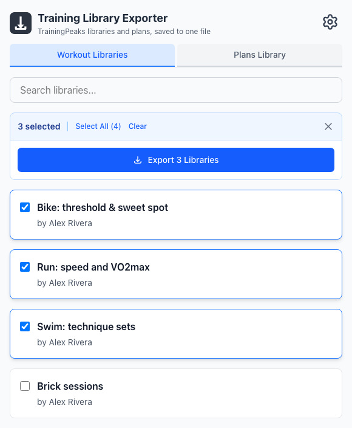
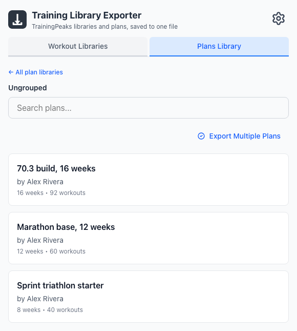

TrainingPeaks has no "export everything" button. Rebuilding years of workouts by hand, one interval at a time, is nobody's idea of a good weekend, so here is one. It is free, it is open source, and it lives quietly in your browser toolbar until you need it.
Download for Chrome
chrome://extensions and switch on Developer mode (top right).It sounds dramatic. It only means "let me add an extension from a folder on my computer".manifest.json inside. If Chrome says the manifest is missing, you are one folder too high or too low. Everyone does this once.training-library-export-(date).json lands in your downloads. That is it. Go and coach someone.
Keep it as a backup, or load it into any tool that reads the format. The format is documented and versioned, so it will not quietly change under you.
No. It exports your libraries and plans, not anyone's completed workouts. A plan exports exactly as TrainingPeaks stores it, so if TrainingPeaks attaches an athlete to a plan workout, that comes along too. Treat the file like the account it came from.
Not yet. Chrome, Edge and Brave all run it.
Open the extension's settings, copy the debug log (it holds timings and error codes, never your data) and open an issue.